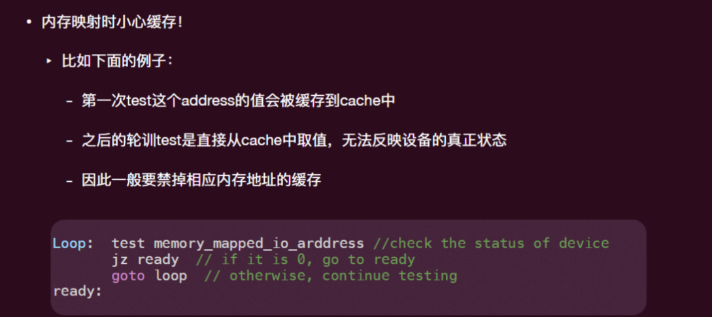
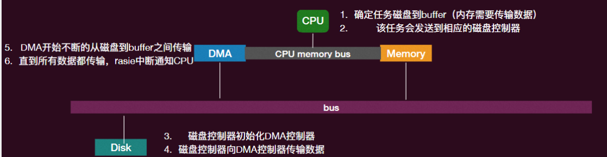
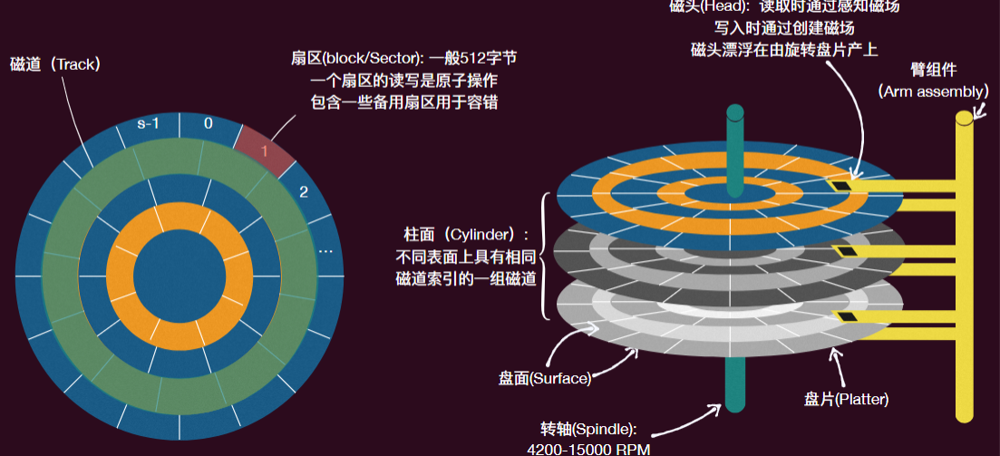
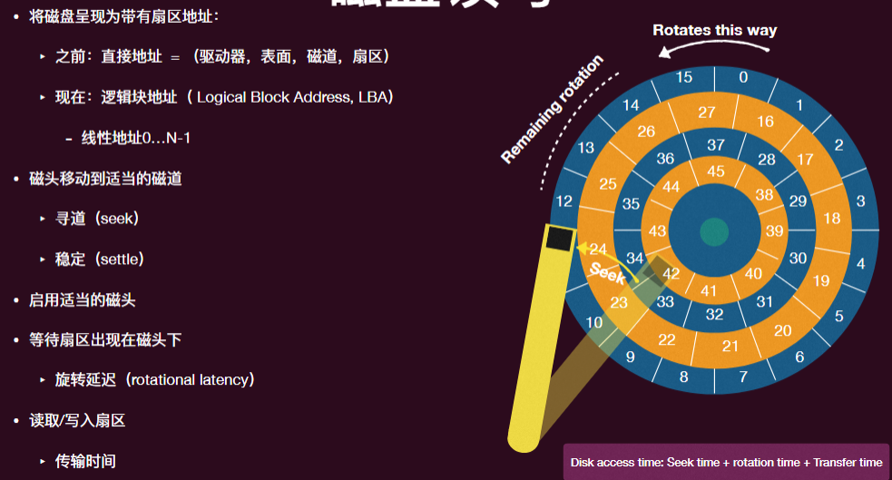
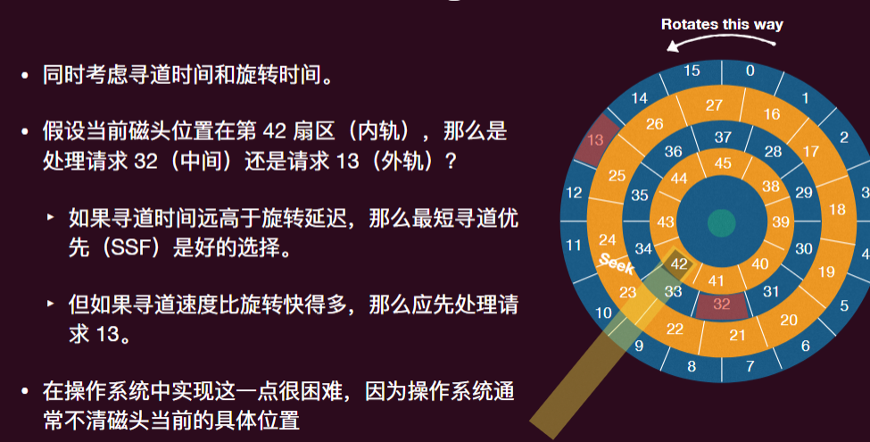

操作系统-13持久化-设备管理
I/O 设备分类
- 块设备（Block devices）
- 以固定⼤⼩的块存储信息
- 传输单位为整个块
- 字符设备 (Character devices)
- 传递或接受字符流
- 不可寻址，没有任何寻址操作
一个典型设备
一个设备有两个重要组成部分
- 它向系统其余部分呈现的硬件接口（允许操作系统控制其运行）
- 它的内部结构（具体实现）
设备接口由几个寄存器组成
- 状态寄存器：读取以查看设备当前状态
- 命令寄存器：指示设备执行特定任务
- 数据寄存器：将数据传递给设备或从设备获取数据
CPU 和设备的通信
CPU 与控制器交互
- 除了⼀组可读写的寄存器外，可能包含⽤于请求队列等的内存
处理器以两种方式访问寄存器
- 端口映射 I/O
- 内存映射 I/O
端口映射：提供额外的 I/O 指令
- 每个控制寄存器被分配一个 I/O 端口号
- 使用特殊的 I/O 指令
- 这些指令通常是特权指令
内存映射：
- 将所有控制寄存器映射到内存空间中
- 每个控制寄存器被分配⼀个唯⼀的内存地址
- 为了访问特定的寄存器，操作系统发出⼀个 load 指令（读取）或 store 指令 （写⼊）该地址
- 然后硬件将 load/store 指令指向到设备⽽不是主存储器

获知设备通信状态
在发出与设备通信的指令后，操作系统需要知道以下情况：
- I/O 设备已完成⼀个操作
- I/O 操作遇到了错误
有两种获知状态的方法
- 轮询 polling：操作系统定期检查设备特定的状态寄存器
- 开销低（没有切换），但如果是低速的设备上会浪费 CPU 周期
- I/O 中断：设备在需要服务时生成中断
- 不会浪费 CPU 周期，但开销高
- 一般来说两种混合
谁来控制数据传输命令
由 CPU 来控制，即 Programmed I/O
- 直接通过处理器的 in/out 或 load/store 传输每个字节
- 优点：硬件简单，易于编程
- 消耗与数据⼤⼩成⽐例的处理器周期（因为每个数据的 in/out 都要⼀个指令）
- 此外，CPU 会⼀直接收到 interrupt，速度变慢
由直接内存访问（Direct Memory Access, DMA）控制
- 给控制器访问内存和总线的权限
- 要求它直接在内存和控制器之间传输数据块

关于专用和通用
计算机系统内部不只是有通⽤的 CPU
- “专⻔”负责 memcpy () 的 CPU：DMA
- “专⻔”负责解析和显示图形的 CPU：GPU
- 很多设备都有⾃⼰的逻辑处理芯⽚（⽐如磁盘）
- I/O 管理可以看成是中央芯⽚（CPU）和外部芯⽚的交流！
为什么不是⼈⼿⼀个通⽤ CPU？
- 因为代价！
- CPU 因为通⽤性增加了很多设计以及与之⽽来的功耗
- 特定领域的任务不需要这么多通⽤性
- 可以更加优化所需任务的指令（⽐如显卡中的并⾏计算部分）
硬件抽象
设备抽象
设备驱动程序通常分为两部分：
- 上半部分：在系统调⽤的调⽤路径中访问
- 实现⼀组标准的、跨设备的调⽤，如 open ()、close ()、read ()、write ()、ioctl ()
- 这是内核与设备驱动程序的接⼝
- 上半部分将启动设备的 I/O 操作，可能会让线程休眠直到完成 (同步和异步 I/O!)
- 下半部分：作为中断例程运行
- 获取输⼊或传输下⼀块输出
- 如果 I/O 现在完成，可能会唤醒休眠的线程
硬盘
将数据磁性地储存在与玻璃、陶瓷或铝等材料的旋转盘上粘合的薄⾦属膜上。


磁盘读写
磁道偏移（Track Skew）：确保在跨越磁道边界时能够正确处理顺序读取
- 从⼀个磁道切换到另⼀个磁道时，磁盘需要时间重新定位磁头
- 如果没有这样的偏移，磁头会被移动到下⼀个磁道，但所需的下⼀个数据块已经旋转到磁头后⾯了（得重新转 ⼀圈才能读到）
多区域（Multi-Zoned） 磁盘驱动器：
- 外部磁道⽐内部磁道有更多的扇区
- 磁盘被组织成多个区域，每个区域是表⾯上⼀组连续的磁道
- 每个区域的每条磁道的扇区数相同
现代磁盘⽀持逻辑块寻址（不考虑磁盘 ⼏何结构）
缓存（磁道缓冲区）：⼀些⼩容量的内存（8 到 16 MB），⽤于存储从磁盘读取或写⼊到磁盘的数据。
- 读取扇区时，会读取该磁道上的所有扇区。
- 写⼊时，有两种写⼊策略：当数据被放⼊缓存时（写回，write back）或数据实际写⼊磁盘后（直写, write through）才确认写⼊
- 缓冲区在磁盘的逻辑板上
磁头调度
- 由于 I/O 成本⾼，操作系统历来在决定发往磁盘的 I/O 顺序⽅⾯发挥了作 ⽤。
- ⾯对⼀组 I/O 请求，磁盘调度程序会检查这些请求并决定下⼀个调度哪个请求。
- ⽬标：通过磁头调度来最⼩化磁头移动，从⽽最⼤化磁盘 I/O 吞吐量
FCFS
最简单的⽅法是先到先服务（FCFS），即按请求到达的顺序处理磁盘请求。
优点
- 请求之间的公平性
- 按应⽤程序预期的顺序
缺点
- 到达的位置可能在磁盘上的随机点，导致较⻓的寻道时间。
STF
Shortest Seek Time: 按磁道顺序排列 I/O 请求队列，优先处理最接近磁道的请求。
- 最小化寻道时间
问题：饿死！ 如果有⼀连串持续不断的中间磁道请求， 那么最两端的磁道请求将得不到服务
电梯算法 / 扫描算法 SCAN
简单地在磁盘上来回移动，按顺序跨磁道处理请求（像电梯⼀样运⾏）
- 从磁盘的⼀端（从外轨到内轨或从内轨到外轨）的单次通过称为⼀次扫描。
有多种变体可⽤：
- F-SCAN：在执⾏扫描时暂时冻结要处理的队列（避免远距离请求的饥饿）。
- C-SCAN：只从外轨到内轨扫描，然后重置到外轨重新开始
- 更平均的等待时间，即对内轨和外轨更公平
Shortest Positioning Time First (SPTF)

过去的操作系统⾮常注重磁盘请求调度。
⽬前的做法是将许多请求发送到磁盘，让磁盘⾃⾏调度。如今的磁盘更智能，并且拥有较⼤的缓存。
- 然⽽，操作系统⾄少可以假设相邻的扇区号在磁盘上也相邻，从⽽顺序访问会更快。
固态硬盘 Solid State Disks SSDs
放电 (erase) 做不到 100% 放⼲净
- 放电数千/数万次以后，就好像是 “充电” 状态了
- Dead cell; “wear out”
- 必须解决这个问题 SSD 才能实⽤
解决方案：
- 间接层
- 在固态硬盘（SSD）中维护⼀个闪存转换层（FTL）。
- 将虚拟块编号（操作系统使⽤的）映射到物理⻚⾯编号（闪存存储控制器使⽤的）。
- 现在可以⾃由重新定位数据，⽽⽆需操作系统知道。
- 写时复制
- 当操作系统更新其数据时，不要覆盖⻚⾯（这样做很慢，需要先擦除⻚⾯，⽽擦除的效率很低，⽐写⼊低）。
- 相反，将新版本写⼊⼀个空闲⻚⾯。
- 更新 FTL 映射以指向新位置。
固态硬盘（SSD）控制器可以分配映射以在⻚⾯之间均衡⼯作负载
- 均衡磨损（Wear Leveling）
对旧版本⻚⾯应该怎么处理？
- 在后台进⾏垃圾收集
- 擦除带有旧⻚⾯的块，将其添加到空闲列表
新的问题：
- Copy-on-write 意味着旧的数据还在！
- logic block 被覆盖，physical block 依然存储了数据
- 有研究发现实际的智能⼿机的⼀些被删除的数据之后仍然“存在”超过六个⽉
- logic block 被覆盖，physical block 依然存储了数据
- 轻度格式化同样存在相同的问题
总结
操作系统同样利用抽象技术管理 I/O
- 各种 drivers 就是为了实现统⼀的接⼝
- 另外⼀个视⻆：I/O 就是各个 CPU（通⽤和专⽤）的交流，drivers 就是解释器！
硬盘
- 磁盘和 SSD
- 各有优缺点